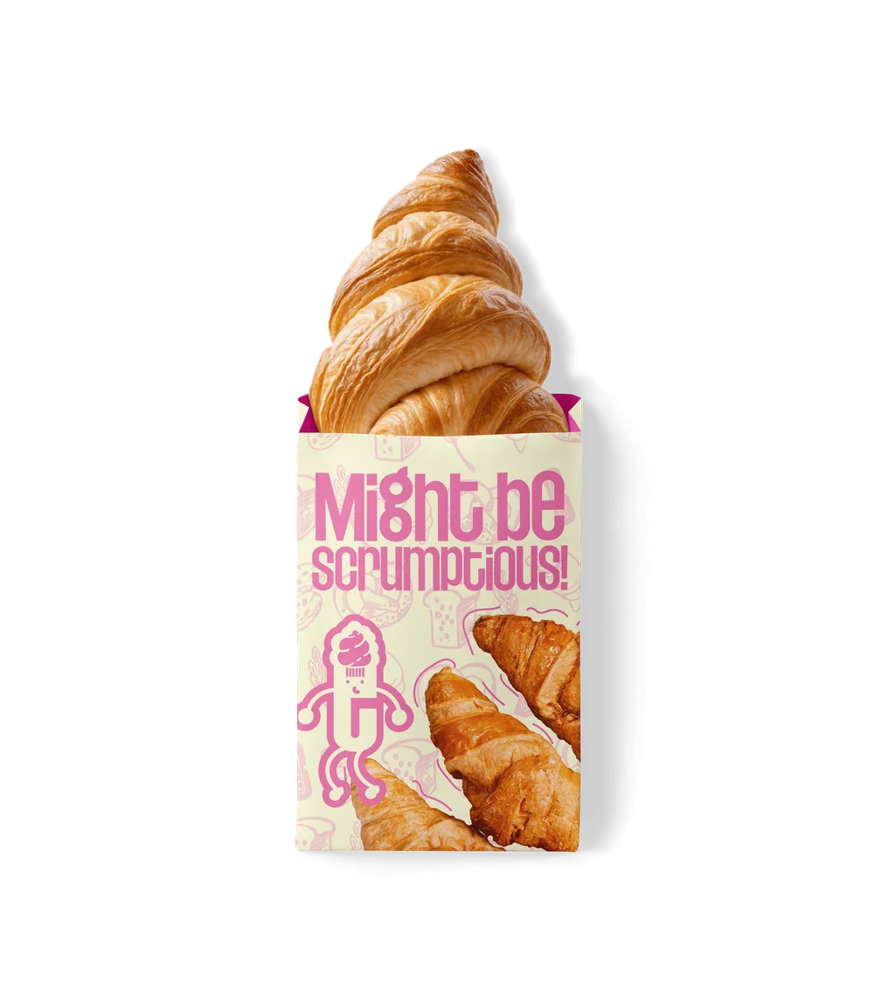
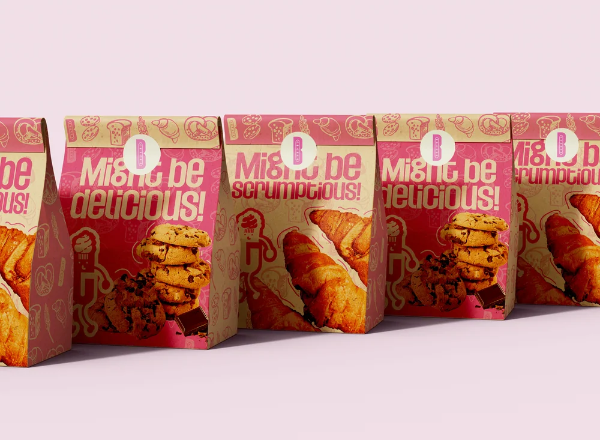

Background
The Bakery had a great product and a clear vision — make pastry fun, bold, and impossible to resist. What they needed was a visual identity that matched that energy. Something that felt as good as their pastries tasted.
Core problem
Pastry has always been seen as traditional and serious. The Bakery wanted to flip that — make it fun, modern, and desirable to a younger audience without losing the craft and quality behind every bite. Their old visual identity was plain and forgettable. It didn't make anyone hungry. It didn't make anyone stop scrolling. It needed to change.
The Approach for The Bakery
We started with one question — what does it feel like to bite into something you've been craving all day? That feeling became the foundation of the entire identity. Bold, warm, and playful — a brand that makes your mouth water before you even see the product. Every element was designed to turn heads — a logo with personality, a colour palette that pops, and typography that feels as fresh as the pastries themselves.
Steps Taken
01 - Logo and Wordmark
A bold, playful wordmark where every letter has personality. The cupcake icon embedded in the letterforms ties the brand back to its product without being obvious about it. Works on dark backgrounds, light backgrounds, and everything in between.
02 - Monogram and Brand Mark
The B monogram was designed to live independently on packaging seals, stickers, and tags. Simple enough to recognise instantly, distinctive enough to own.
03 - Colour System
Hot pink and warm cream. A combination that feels indulgent, modern, and completely appetite-driven. The palette works across digital and print without losing any of its punch.
04 - Packaging Design
The packaging became the brand's loudest voice. Might be delicious. Might be scrumptious. Copy and design working together to create something people want to keep, share, and photograph.
05 - Brand Pattern
A custom illustrated pattern featuring croissants, pretzels, bread loaves, and cookies. Hand-drawn feeling, consistently on-brand, infinitely scalable across tissue paper, bags, and boxes.
Key Deliverables
- Logo and wordmark
- B monogram and brand mark
- Full colour palette
- Packaging design
- Custom illustrated brand pattern
- Brand guidelines


Results and Impact
The Bakery launched with a brand identity that finally did justice to what they were creating. Playful without being childish. Desirable without being pretentious. A visual world that makes pastry impossible to ignore — and The Bakery impossible to forget.